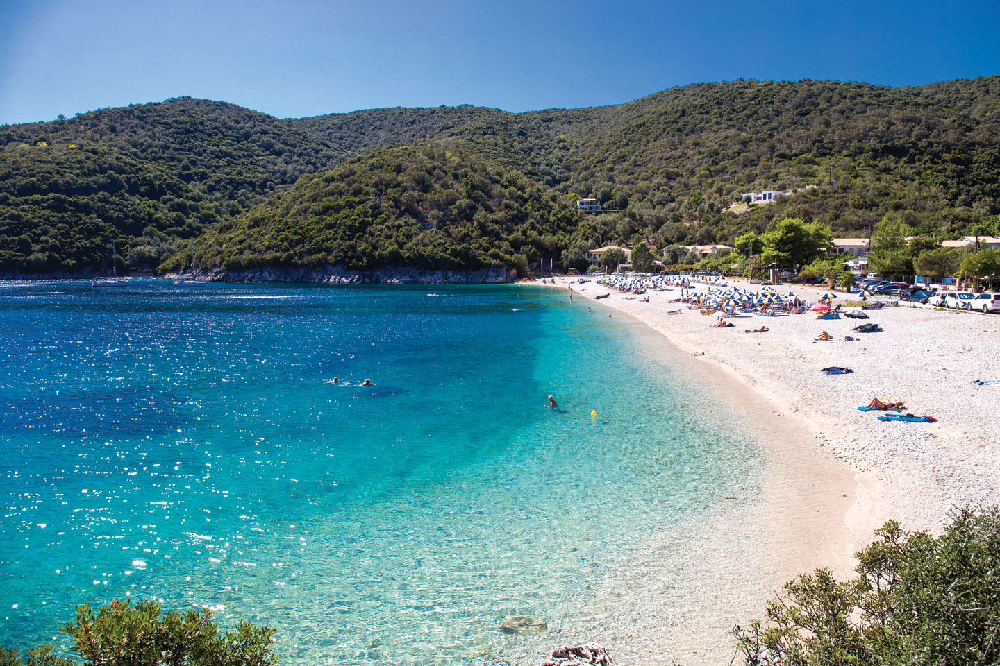

ΜΕΡΙΚΕΣ ΑΠΟ ΤΙΣ ΟΜΟΡΦΟΤΕΡΕΣ ΠΑΡΑΛΙΕΣ ΤΟΥ ΝΗΣΙΟΥ ΠΟΥ ΑΞΙΖΕΙ ΝΑ ΕΠΙΣΚΕΦΤΕΙΤΕ
Η φύση υπήρξε πολύ γενναιόδωρη με το νησί της Λευκάδας, το οποίο είναι προικισμένο με παραλίες σπάνιας ομορφιάς που κόβουν την ανάσα. Προικισμένο με εντυπωσιακά τοπία και μερικές από τις ωραιότερες παραλίες της Ελλάδας, το «στεριανό» νησί του Ιονίου έχει τη συνταγή των τέλειων διακοπών. Για τις παραλίες της Λευκάδας θα ακούσετε πολλά και θα διαβάσετε ακόμα περισσότερα. Τίποτα όμως δεν συγκρίνεται με την αίσθηση που θα νιώσετε όταν φτάσετε εκεί και τις δείτε από κοντά. Η ανατολική πλευρά της, με θάλασσα ήρεμη και ρηχή, προσφέρεται για οικογενειακές διακοπές με θέα στα νησάκια της Λευκάδας. Η δυτική πλευρά, από την άλλη, είναι γεμάτη με άγριας ομορφιάς παραλίες, όπου τα απότομα βράχια, η λευκή άμμος και τα διάφανα νερά στήνουν ένα εντυπωσιακό σκηνικό που μαγεύει τους πάντες.
Παραλία Αμμόγλωσσα
Η παραλία Αμμόγλωσσα είναι η πρώτη παραλία που μπορεί κανείς να επισκεφτεί ερχόμενος στο νησί της Λευκάδας.Eίναι μια πολύ μικρή αμμώδης παραλία με κρυστάλλινα νερά. Εκτός από τις λευκές και χρυσές αμμουδιές και το καθαρό γαλάζιο νερό, προσφέρει μοναδική εγγύτητα στην ίδια την πόλη, γεγονός που τους καθιστά δημοφιλείς στους ντόπιους αλλά και στους τουρίστες.
Παραλία Κάστρο
Η παραλία «Κάστρο» είναι η πρώτη παραλία που μπορεί κανείς να επισκεφτεί μπαίνοντας στο νησί της Λευκάδας. Αποτελεί μέρος της παραλίας «Γύρα» και είναι πολύ εύκολα προσβάσιμη από ένα πεζόδρομο. Υπάρχει επίσης, δωρεάν πάρκινγκ δίπλα στη παραλία καθώς και λεωφορεία που εξυπηρετούν. Βέβαια μπορεί κανείς να καλύψει τη διαδρομή περπατώντας περίπου 15 λεπτά από την πόλη. Η παραλία «Κάστρο» χαρακτηρίζεται ως μια μακρυά άσπρη αμμώδης παραλία με καθαρά κρυστάλλινα νερά. Εκτός από την άσπρη και χρυσή άμμο που προσφέρει, η παραλία Κάστρο βρίσκεται ιδιαίτερα κοντά στην ίδια την πόλη, κάνοντας την δημοφιλή ανάμεσα τόσο στους ντόπιους όσο και τους τουρίστες. Είναι ιδανική για ένα αναζωογονητικό διάλειμμα κατά τη διάρκεια της ημέρας.
Παραλία Γύρα
Η παραλία Γύρα βρίσκεται στο βορειότερο άκρο του νησιού, κοντά στην είσοδο της Λευκάδας και είναι μία από τις παραλίες που προτιμούν οι ντόπιοι, λόγω της εγκύτητάς της στο κέντρο. Βρίσκεται αμέσως μετά την παραλία του Κάστρου με κατεύθυνση προς τις παραλίες του Αη Γιάννη και του Μύλου.Το όνομά της οφείλεται στο γεγονός ότι κυκλώνει τη λιμνοθάλασσα, που βρίσκεται μπροστά από την πόλη, και κάποιος πρέπει να κάνει το <<γύρο>> για να φτάσει και πάλι στην πόλη.
Παραλία Άγιος Ιωάννης
Η παραλία του Άγιου Ιωάννη βρίσκεται σε απόσταση ανάσας από την πόλη, και ανήκει στη Γύρα. Είναι τόσο κοντά που κάποιος μπορεί να κάνει ένα τέλειο διάλειμμα για να χαλαρώσει στη μοναδική θέα που προσφέρει το μέρος. Τα νερά έχουν γαλαζοπράσινο και τυρκουάζ χρώμα, που σε κάνουν να θες να μπεις στη θάλασσα χωρίς δισταγμό. Κάποιες φορές οι άνεμοι εδώ είναι λίγο έντονοι, γεγονός που ευνοεί φυσικά τους λάτρεις του surf. Ωστόσο, για λόγους ασφαλείας στην παραλία υπάρχει και ναυαγοσώστης. Στην επάνω πλευρά του δρόμου θα βρείτε ταβερνάκια και καφετέριες για να ξαποστάσετε από τη ζέστη του καλοκαιριού και να απολαύσετε τον καφέ σας ατενίζοντας τόσο το Ιόνιο πέλαγος,όσο και τους επίδοξους σέρφερς στην προσπάθειά τους να δαμάσουν τα νερά.
Παραλία Πευκούλια
Η παραλία Πευκούλια βρίσκεται στο βορειοδυτικό τμήμα του νησιού της Λευκάδας, ανάμεσα στην πόλη της Λευκάδας (απόσταση περίπου 10 χλμ) και τον Άγιο Νικήτα. Είναι μια μεγάλη αμμώδης παραλία με πεντακάθαρα νερά και πευκοδάσος που φθάνει μέχρι την άμμο. Μετά τις κατολισθήσεις που προήλθαν από τους σεισμούς υπάρχουν διάσπαρτοι βράχοι που μετατρέπουν το τοπίο σε πιο ανεξέλεγκτο. Η παραλία είναι οργανωμένη μόνο σε ένα σημείο της. Μετά τον μεγάλο βράχο η περιοχή είναι ιδιαίτερα αγαπητή στους γυμνιστές και επιπλέον, ενδέχεται να δείτε ελεύθερους κατασκηνωτές, μιας και αγαπούν την ησυχία και την ξεγνοιασιά που προσφέρει ο τόπος αυτός.
Παραλία Άγιος Νικήτας
Παίρνοντας το δρόμο για τη δυτική ακτή της Λευκάδας, περνάτε ανάμεσα από όμορφα χωριουδάκια και καταπράσινα τοπία. Όταν φτάσετε στο χωριό του Αγίου Νικήτα, παρκάρετε στο πάρκινγκ ή κατά μήκος του δρόμου, πριν την είσοδο, γιατί δεν επιτρέπονται αυτοκίνητα μέσα στο γραφικό χωριό. Κατηφορίστε τον πλακόστρωτο δρόμο και αφήστε τις αισθήσεις σας ελεύθερες να απολαύσουν τον ήχο των τζιτζικιών και τις μυρωδιές του καλοκαιριού. Μόλις ξεπροβάλλουν μπρος τα μάτια σας τα γαλαζοπράσινα νερά, θα γοητευτείτε από την ηρεμία του μικρού αυτού τόπου. Ο μικρός κολπίσκος, που περιβάλλεται από βράχια, προσφέρει μαγευτική θέα στο Ιόνιο και μπορείτε να παραμείνετε αρκετές ώρες εδώ, αφού υπάρχουν άφθονα εστιατόρια και καφέ που προσφέρουν σκιά το ζεστό μεσημέρι. Επίσης, ο Άγιος Νικήτας είναι τέλεια επιλογή για ένα ήρεμο βραδινό ποτό ακούγοντας τον παφλασμό της θάλασσας.
Παραλία Μύλος
Η παραλία του Μύλου είναι μοναδική, μοιάζει να ναι ψεύτικη σαν την κοιτάς από μακρυά. Το μεγαλύτερο προτέρημα της είναι ότι είναι απομονωμένη και δεν κατακλύζεται από την ύπαρξη αυτοκινήτων. Η πρόσβαση στην παραλία Μύλος μπορεί να γίνει με καραβάκι από τον Άγιο Νικήτα, όμως για τους πιο περιπετειώδεις τύπους υπάρχει και ένα στενό μονοπάτι που ξεκινάει μέσα από το χωριό και οδηγεί μέχρι εκεί. Λευκή άμμος και βαθιά τιρκουάζ νερά σε περιμένουν να τα απολαύσεις για πολλές ώρες.
Παραλία Κάθισμα
Η παραλία Κάθισμα είναι μια τεράστια αμμουδερή παραλία στην δυτική Λευκάδα σε απόσταση 15 χλμ από την πόλη. Η πρόσβαση είναι αρκετά εύκολη, διασχίζοντας μικρά χωριουδάκια και τον καταπράσινο δυτικό άξονα, και ευχάριστη λόγω της πανοραμικής θέας αφού τα μάτια σας θα έχουν ευφρανθεί από την υπέροχη διαδρομή πριν ακόμα φτάσετε και αντικρίσετε το Ιόνιο πέλαγος. Η παραλία Κάθισμα είναι πλήρως οργανωμένη παραλία και τα beach bar της, την έχουν κάνει πόλο έλξης τόσο για τους νέους που κάνουν τις διακοπές τους στο νησί,όσο και για αυτούς που τους αρέσει η δυνατή μουσική και η πολυκοσμία. Παρόλα αυτά, το μέγεθός της δίνει την ευκαιρία και σε όσους προτιμούν την ησυχία ή λίγο πιο ιδιωτικές στιγμές να έχουν και αυτοί το χώρο τους στις άκρες. Η έκπληξη στο Κάθισμα έγκειται στο γεγονός ότι οι λάτρεις του paragliding (αλεξίπτωτο πλαγιάς) μπορούν να απολαύσουν απίστευτη θέα πετώντας πάνω από την παραλία και τα τουρκουάζ νερά. Η παραλία περιβάλλεται από εντυπωσιακούς γκρεμούς και η λεπτόκοκκη λευκή άμμος και τα σμαραγδένια νερά δίνουν την αίσθηση στον επισκέπτη ότι βρίσκεται σε έναν παραδεισένιο χώρο.
Παραλία Εγκρεμνοί
Η απαράμηλη ομορφιά της παραλίας Εγρεμνοί στη Λευκάδα την κατέστησε ένα από τα πιο όμορφα και πολυδιαφημισμένα τοπία του κόσμου. Το νερό που περιβάλλει την παραλία είναι καθαρό, γαλαζοπράσινο και προσφέρει μία από τις καλύτερες συνθήκες για κολύμπι στην Ευρώπη. Η παραλία Εγκρεμνοί είναι επίσης μια από τις μεγαλύτερες παραλίες της Λευκάδας, με μήκος πάνω από 2,5 χιλιόμετρα. Όποιος αναζητά ειρήνη και χαλάρωση σε ένα γραφικό περιβάλλον, πιθανότατα δεν θα απογοητευτεί από αυτή την όμορφη περιοχή της Λευκάδας. Η παραλία Εγκρεμνοί προσελκύει ετησίως πολλούς ταξιδιώτες και θεωρείται μία από τις ομορφότερες παραλίες της Ελλάδας. Το όνομά της προέρχεται από τους εντυπωσιακούς βράχους που περιβάλλουν την παραλία και τους τεράστιους βράχους που μοιάζουν να κρέμονται από ψηλά.Η παραλία από το 2021 πλέον έχει πρόσβαση τόσο με τα πόδια, όσο και από την θάλασσα και επιπλέον κάθε μέρα ημερήσιες κρουαζιέρες φτάνουν στην παραλία με εκατοντάδες επισκέπτες.
Παραλία Πόρτο Κατσίκι
Η παραλία Πόρτο Κατσίκι είναι μοναδική στο νησί της Λευκάδας. Το όνομα της έχει προέλθει από τις κατσίκες που μπορούσαν να φτάσουν στην δύσβατη παραλία. Η παραλία είναι φημισμένη για το τοπίο και την καταγάλανη θάλασσα της. Βρίσκεται στο νότιο μέρος του νησιού ανάμεσα σε ένα κοίλο βράχο και νοτιοδυτικά της πόλης της Λευκάδας. Η φυσική ομορφιά της παραλίας του Πόρτο Κατσίκι προσφέρει ένα από τα πιο εντυπωσιακά τοπία για τα οποία φημίζεται το νησί της Λευκάδας. Η παραλία του Πόρτο Κατσίκι είναι πολυσύχναστη κατά την καλοκαιρινή περίοδο και χιλιάδες επισκέπτες από όλο τον κόσμο επισκέπτονται τη Λευκάδα μόνο για να επισκεφτούν την παραλία Πόρτο Κατσίκι.
Παραλία Αγιοφύλλι
Η παραλία Αγιοφύλι είναι μια από τις ομορφότερες βοτσαλωτές παραλίες του νησιού και βρίσκεται σε έναν πολύ γραφικό κολπίσκο στα δυτικά της Βασιλικής. Τα νερά είναι γαλαζοπράσινα και πεντακάθαρα. Τους καλοκαιρινούς μήνες του Ιουλίου-Αυγούστου το Αγιοφύλλι είναι πολυσύχναστο και ίσως να προτιμήσετε τις πρώτες πρωινές ώρες αν θέλετε να αποφύγετε τη μεγάλη κοσμοσυρροή.
Παραλία Βασιλικής
Η παραλία της Βασιλικής είναι βοτσαλωτή έξω, όμως μέσα γίνεται γρήγορα αμμώδης και τα νερά είναι αβαθή.Η Βασιλική θεωρείται μία από τις καλύτερες της Μεσογείου για το άθλημα της ιστιοσανίδας, αφού έχει ιδιαίτερες συνθήκες αέρηδων. Εδώ συγκεντρώνονται παραθεριστές διαφόρων εθνικοτήτων, λάτρεις των θαλάσσιων σπορ και το περιβάλλον μεταμορφώνεται σε διεθνές. Κάθε χρόνο διοργανώνονται αγώνες και το μικρό αυτό μέρος σφίζει από ζωή.
Παραλία Μικρός Γιαλός
Στη γαλήνη ενός φυσικού κόλπου, κάτω από το χωριό Πόρος (στα νότια του νησιού), έχει σχηματιστεί η εξαίσια παραλία του Μικρού Γιαλού. Σχεδόν απομονωμένη, ξεπροβάλλει μέσα από τα καταπράσινα βουνά που την περιτρυγιρίζουν, με την κάτασπρη βοτσαλωτή φορεσιά της. Δίπλα της ξαποσταίνουν τα κρυστάλλινα τουρκουάζ νερά του Ιονίου. Οι ορεινοί όγκοι τριγύρω αποτελούν φυσική προστασία από τους ανέμους, με αποτέλεσμα η θάλασσα να γαληνεύει τις περισσότερες ώρες της μέρας. Παλαιότερα ήταν το λιμανάκι του Πόρου. Ο Mικρός Γυαλός ενδείκνυται για τους λάτρεις της ήσυχων διακοπών και για αυτούς που έχουν ανάγκη να χαλαρώσουν κοντά στη φύση, παρέχοντας όμως επαρκείς διευκολύνσεις, όπως ταβερνάκια, καφέ και μίνι μάρκετ.
Παραλία Δεσίμι
Η παραλία Δεσίμι βρίσκεται σε έναν όρμο, στην έξω πλευρά της χερσονήσου του Βλυχού. Είναι μικρή, σκιερή και ιδανική για κανό, με το οποίο μπορείτε να εξερευνήσετε τις μικρές αμμουδιές και τις σπηλιές κατά μήκος της ακτής. Είναι βότσαλωτή παραλία και στον κόλπο υπάρχουν δύο οργανωμένα κάμπινγκ.
Παραλία Αμμούσα
Η όμορφη παραλία Αμμούσω ή Αμμούσα βρίσκεται στο νότιο μέρος του νησιού κοντά στην παραλία Αγιοφύλλι, σε απόσταση 4 χιλιομέτρων περίπου από τον παραλιακό δρόμο μετά το Μαραντοχώρι. Στο βάθος ενός κόλπου, περιβάλλεται από βράχους, απομονωμένη με βότσαλο και ήσυχα πεντακάθαρα νερά. Είναι αρκετά οργανωμένη με ομπρέλες, ξαπλώστρες και ταβέρνες. Τον Αύγουστο είναι πολυσύχναστη και αν τύχει και βρεθείτε εκεί τον δεκαπενταύγουστο, θα έχετε την ευκαιρία να συμμετάσχετε σε ένα τοπικό έθιμο που λαμβάνει χώρα στην παραλία. Σούπα λευκαδίτικη, παραδοσιακή, «σπαέτο» με γίδα στην τοπική διάλεκτο, που ετοιμάζεται σε μεγάλα καζάνια στην παραλία από τις μεσημεριανές ώρες. Κι φυσικά εκτός από το παραδοσιακό έδεσμα και το άφθονο κρασί, δε λείπει και ο χορός και το τραγούδι, που μετατρέπουν αυτό το ωραίο έθιμο σε μια φανταστική γιορτή για ντόπιους και επισκέπτες.
Παραλία Νυδρίου
Ο οικισμός του Νυδριού και η ομώνυμη παραλία βρίσκεται στο ανατολικό τμήμα του νησιού και είναι το πιο γνωστό και κοσμοπολίτικο τουριστικό θέρετρο του νομού. Η θέα από πιο ψηλά είναι πανέμορφη και μαγευτική. Όλος ο κόλπος είναι πνιγμένος στο πράσινο και τα νερά είναι πεντακάθαρα και κρυστάλλινα. Η παραλία στο Νυδρί είναι πλήρως οργανωμένη και σε κοντινή απόσταση, ο επισκέπτης μπορεί να βρει τα πάντα από φαγητό και διασκέδαση μέχρι στέγαση.
Παραλία Νικιάνας
Στην ανατολική ακτή της Λευκάδας και κατά μήκος του παραθαλάσσιου οικισμού της Νικιάνας, υπάρχουν ορισμένες μικρές ή και μεγαλύτερες παραλίες. Καθαρές και φροντισμένες, αποτελούν πόλο έλξης τουριστών και καθιστούν την ευρύτερη περιοχή της Νικιάνας έναν από τους σημαντικότερους τουριστικούς προορισμούς του νησιού της Λευκάδας. Η περιοχή είναι δημοφιλής στις οικογένειες με παιδιά και ηλικιωμένους διότι η πρόσβαση είναι πολύ εύκολη και τα νερά πιο αβαθή σε σχέση με τις δυτικές παραλίες. Η εγγύτητα με τις ακτές της Αιτωλοακαρνανίας προσφέρουν πολύ όμορφη θέα. Συχνά το τοπίο ομορφαίνει με τα περιδιαβαίνοντα καραβάκια και ιστιοπλοϊκά.